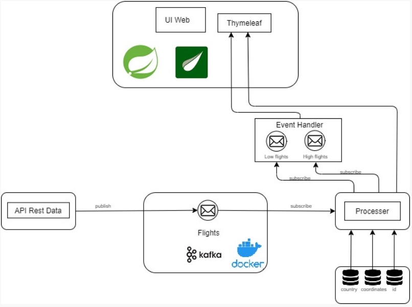
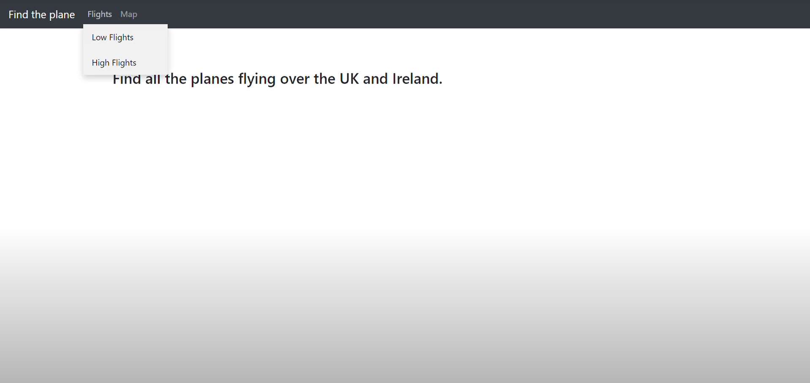
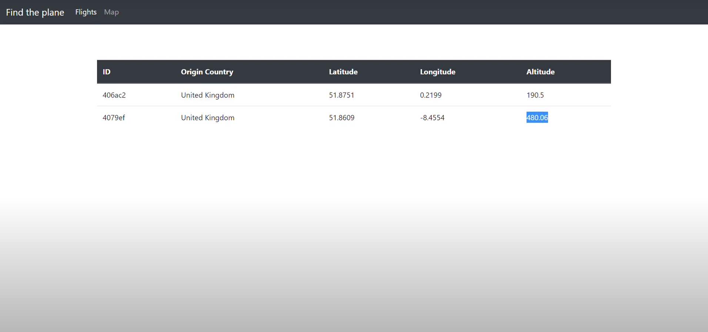
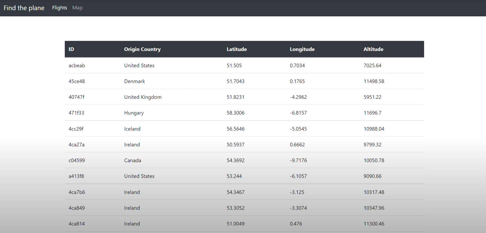
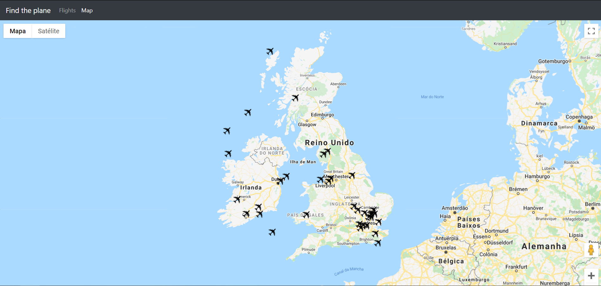

Introduction
O Find the Plane é uma aplicação para monitorizar a gestão de tráfego aéreo, onde será possível visualizar um mapa, em tempo real, com todos os aviões numa determinada área. Será possível também calcular a velocidade média de cada avião, bem como a distância percorrida. É possível visualizar diversas estatísticas de aviões como por exemplo, a sua altitude de voo e as suas coordenadas num determinado intervalo de altitude através de uma tabela disponível numa tabela.
Video de Demonstração da aplicação
Demonstração do Logstash
Link github onde se pode enccontrar o projeto desenvolvido
Personas
Persona 1
João Pedro da Silva Moreira
- Birthday: 1 May 1999
- Phone: +351 964 897 123
- City: Aveiro, Portugal
- Age: 22
- Email: jmoreira@ua.pt
O João tem 22 anos e é aluno do Mestrado de Matemática na Universidade de Aveiro e está a fazer um estudo sobre a velocidade média de todos os aviões que saem do Aeroporto de Sá Carneiro no Porto e têm como destino o Aeroporto de Londres. Para realizar o seu estudo o João precisaria de uma plataforma que o ajudasse a verificar de forma rápida e eficaz quais os aviões que efetuam esse percurso.
Persona 2
Carla Eduarda da Costa Pereira
- Birthday: 14 April 1990
- Phone: +351 913 478 279
- City: Coimbra, Portugal
- Age: 31
- Email: carlapereira@gmail.com
O Afonso tem 54 anos e é um trabalhador da Continental Engineering Services Portugal no Porto e recentemente teve de fazer uma viagem de trabalho para Itália. A sua mulher, Carla de 53 anos e também trabalhadora na Continental Engineering Services Portugal no Porto, ansiosa com a viagem do marido, gostava de ter acesso a uma plataforma simples de usar que lhe permitisse ver em tempo real o estado do avião em que o seu marido irá estar e assim conseguiria acompanhar a sua viagem o tempo todo.
Persona 3
Marco da Silva Torres
- Birthday: 1 March 2000
- Phone: +351 927 190 727
- City: Aveiro, Portugal
- Age: 21
- Email: torressilva@ua.pt
O Marco tem 21 anos e é estudante da Universidade de Aveiro e para um trabalho pedido na disciplina de Planeamento Estratégico Territorial foi-lhe pedido que verificasse a distribuição do tráfego aéreo na zona do Reino Unido. Para a realização deste trabalho, Marco gostava de ter acesso a um mapa em tempo real onde lhe fosse possível visualizar todo o tráfego aéreo.
Scenarios
Scenario 1
O João fez uma pesquisa no seu computador pessoal e encontrou a plataforma Find The Plane, que satisfaz todas as necessidades para realizar o seu trabalho. Através do uso da plataforma, esta irá permitir que saiba em momento real a velocidade de todos os aviões que sobrevoam o Reino Unido e Irlanda.
Scenario 2
Uns dias antes da viagem do seu marido, Carla soube da existência de uma plataforma com os recursos necessários que lhe permitiria acompanhar a viagem do seu marido. Então Carla decidiu usar a plataforma Find The Plane para poder visualizar em tempo real o percurso do avião do marido. Sabendo certos dados sobre o avião (país de origem) em que o seu marido iria estar encontrou o avião e acompanhou a viagem do mesmo através do seu computador.
Scenario 3
O Marco fez umas pesquisas para saber qual seria a melhor forma de conseguir realizar o seu trabalho da melhor forma possível até que encontrou a plataforma Find The Plane. Com o auxílio desta plataforma que lhe fornece um mapa onde se pode visualizar todo o tráfego aéreo, Marco usou o mapa da plataforma para conseguir perceber quais as zonas do Reino Unido com maior e menor tráfego aéreo.
Specification
Recursos
Página web com a seguinte informação:
- Mapa Dinâmico com aviões em tempo real;
- Tabela dinâmica com informação relativa a cada avião
Requisitos
- Ligação à Internet
- Web Browser
Use Cases
UC1: Verificar a quantidade de tráfego aéreo:
- Ator Principal: Utilizador
- Descrição: Verificar a quantidade de tráfego aéreo
- Procedimentos: O utilizador tem de abrir a aplicação web e de seguida Verificar no mapa a quantidade de aviões que existem no local
- Pré-condições: Ter ligação à Internet, ter um web browser e existirem aviões em viagem naquele preciso momento
- Pos-condições: O avião é visível no mapa
UC2: Verificar a altitude dos aviões:
- Ator Principal: Utilizador
- Descrição: Verificar a altitude de cada avião
- Procedimentos: O utilizador tem de abrir a aplicação web e de seguida verificar na tabela disponível as altitudes de cada avião
- Pré-condições: Ter ligação à Internet, ter um web browser e existirem aviões em viagem naquele preciso momento
- Pos-condições: A altitude de cada avião é disponiblizada numa tabela
UC3: Calcular a distância entre aviões:
- Ator Principal: Utilizador
- Descrição: Verificar as coordenadas de cada avião
- Procedimentos: Utilizador tem de abrir a aplicação web e de seguida verificar na tabela disponível as coordenadas de todos os aviões existentes
- Pré-condições: Ter ligação à Internet, ter um web browser e existirem aviões em viagem naquele preciso momento
- Pos-condições: As coordenadas de cada avião são disponíblizadas numa tabela
Architecture
Recursos
Como correr em localhost:
- mvn clean install - Para gerar o ficheiro .jar com a aplicação
- docker-compose up - Faz build e correr os containers no docker
- Ir ao browser e correr localhost:8082
Como correr o projeto em RuntimeVM
- Estar na VPN da Universidade de Aveiro
- Username: ssh esp22@192.168.160.87
- Password: findtheplane
- Correr: docker-compose up
- Web Browser: http://192.168.160.87:22500
Ficheiro Jenkins
O ficheiro jenkins importa o nosso projeto github através do seu endereço. Este ficheiro implementa a nossa aplicação maven java e o nosso producer
- Cloning repository: Aceder aos ficheiros do Repositório;
- Build: Esta etapa usa o plugin 'mvn clean package' do maven que limpa os arquivos e diretórios gerados durante a compilação anterior.
- Artifactory Deployment Stage: Esta etapa usa o plugin 'mvn deploy' do maven para implementar a nossa aplicação maven no repositório do artifactory. O ficheiro settings.xml é integrado no jenkins e no pom.xml. Nós definimos onde implementamos a nossa aplicação maven no artifactory.
- Build and Deploy Docker Image Stage: Nesta etapa, executamos duas etapas em paralelo em que construímos as Docker Images da nossa aplicação em java maven e do nosso "producer" em python.
- Remote Control: Nesta etapa implementamos a nossa imagem que cria o container na runtime vm através de ligação ssh usando as nossas credenciais.
Credenciais
Credenciais runtime VM:
- Username: esp22@192.168.160.18
- Password: findtheplane
Credenciais MySQL:
- Username: esp22_db
- Password: findtheplane
Docker Containers and Images
Docker Containers in Runtime: 192.168.160.18
Portainer
- Porta: 9000
elk-elasticsearch
- Porta: 9200
elk-kibana
- Porta: 5601
MySQL
- Porta: 2181:9092
zookeeper
- Porta: 2181
Kafka
- Porta: 3306
Docker Registry: 192.168.160.48:5000
Docker Images
- Producer-Python
- Spring Boot Docker Compose App
Manual
Para iniciar a utilização da nossa aplicação terá de realizar os procedimentos anteriormente descritos. Após aceder ao link
"http://192.168.160.87:22500" irá encontra algo idêntico à imagem que se segue onde se pode escolher uma das duas opções disponiveis,
visualizar os aviões num mapa ou verificar a informação dos mesmos através de uma tabela.

Se optar por escolher a opção de visualizar a informação dos aviões, pode se optar pelos dois tipos existentes, baixa ou elevada
altitude.

Ambos apresentam as caracteristicas de cada avião. Apesar de um só mostrar aviões até 500 metros (Low flights) e outro com mais
de 5000 metros de altitude (High flights). É possível também verificar todos os voos numa uníca tabela.

Por último, é possível visualizar todos os aviões que se encontram na região da Irlanda e do Reino Unido através de um mapa
escolhendo a opção "Map".
